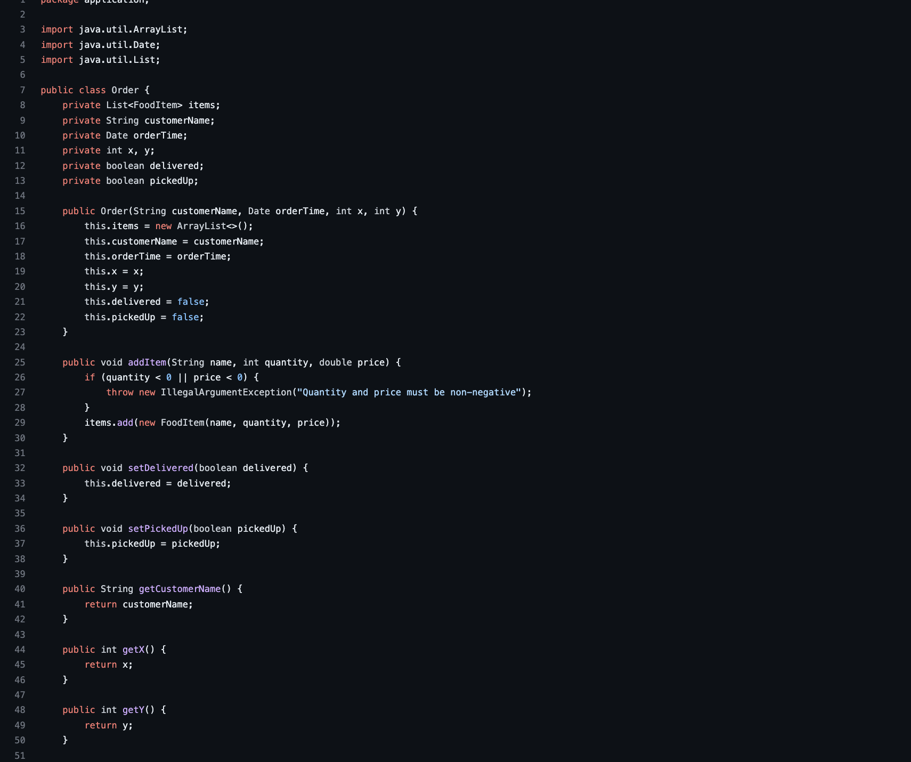
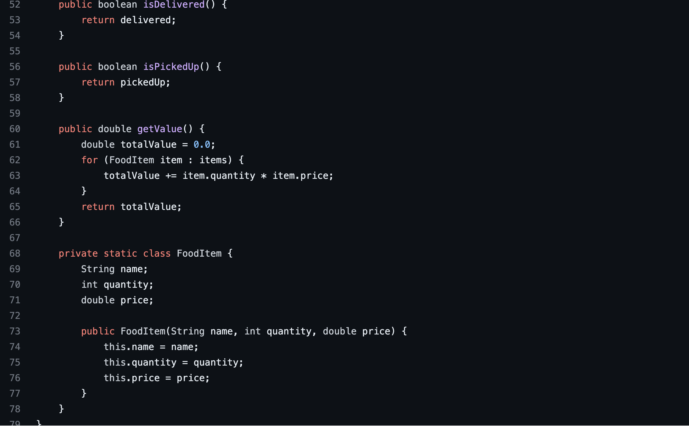
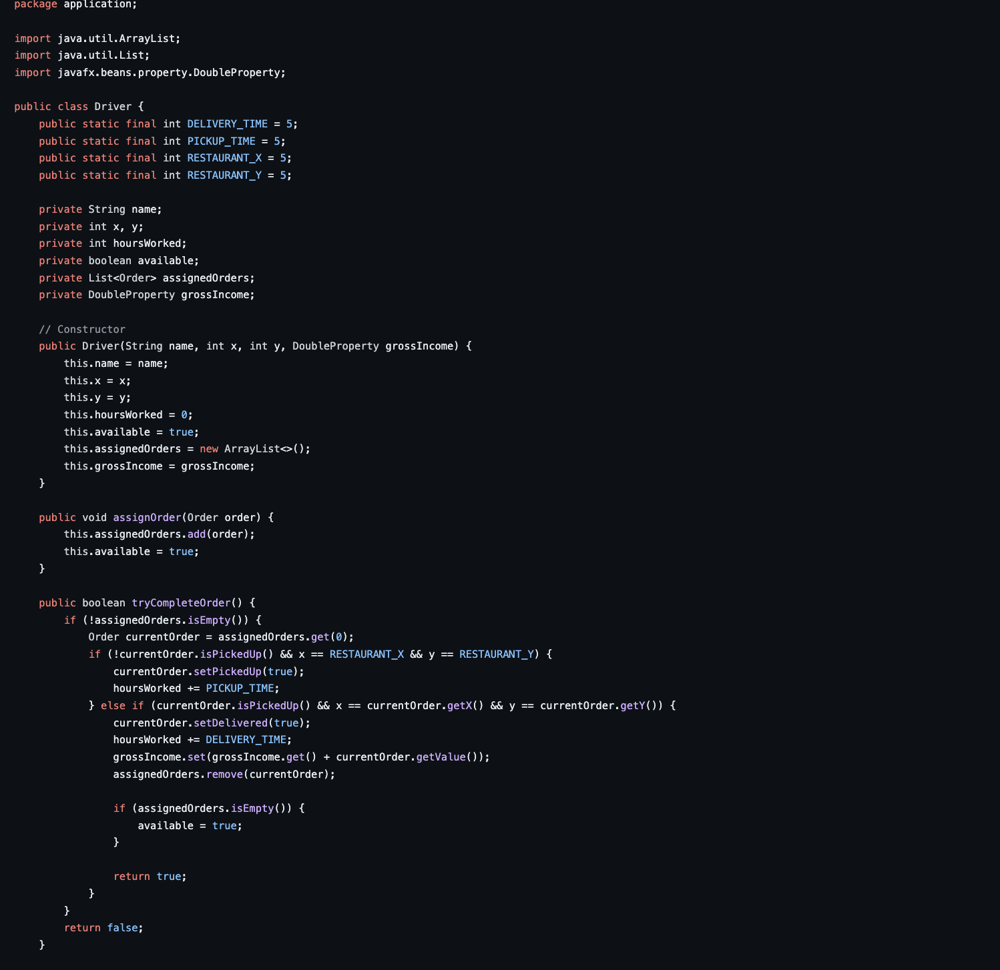
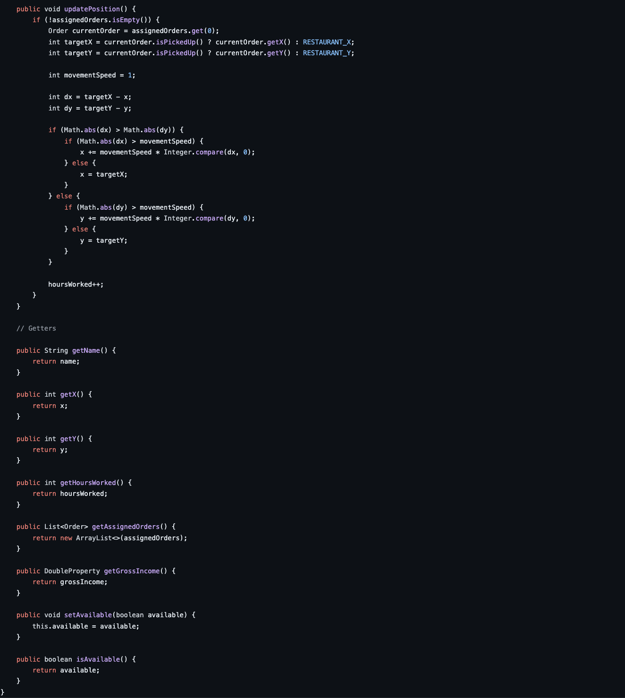

Project Overview
Cuisine To Go is a food delivery simulation app that allows a delivery company to optimize its schedule by sending the closest driver to pick up available orders. The program assigns active drivers to fulfill orders by picking up food, traveling to the drop-off location, and updating the map to show the current status of the system.
Road Map
- Started with 3 classes and a general design layout for the program.
- Refined the main GUI several times before landing on a layout with new order and driver actions, a map grid, a step button, and a gross income label.
- Used an ArrayList for orders and drivers and one object for the scheduler.
- Used pop-up windows to collect user input for new orders and drivers.
- Implemented methods that support receiving new food orders and creating new Driver objects.
- Worked through merge conflicts and team coordination as the application grew.
- Connected classes together with event handler methods.
- Linked the Order, main controller, Driver, and Scheduler classes so orders are assigned based on current driver location.
- Implemented the Step button to advance the system by 1 minute and update all active driver states.
Code Samples
Order Class


Driver Class


What I Learned
- Source Control
- Java
- Merge Conflicts
- Developing as a Team
- Documentation